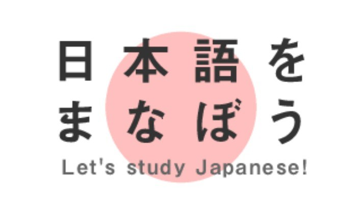

Nihongo Kaiwa

Vocabulary 単語
Build up your knowledge on Japanese words and vocabulary. This can really speed up how quickly you learn the language. Do not let the Kanji Scare you! You should focus on learning on how to pronounce words and little by little you'll learn to associate certain kanji with those words
Sometimes you will get bored of just studying grammar all day. While I don't deny the importance of grammar, increasing your "word inventory" is equally important as well.
When I was studying in my Japanese courses, my teacher gave us separate Japanese word lists containing vocabulary related to that particular lesson.
Throughout the years of my studies, these stack of vocabulary lists have not only helped me to enrich my knowledge in Japanese words, they have also strengthened my Japanese studies.
3 Advantages of Knowing More Words
You tend to speak more fluently with a rich set of Japanese vocabulary in your bag. Hence it will encourage you to speak to people voluntarily.
More words also means more quality contents in what you write and therefore easier for you to communicate through writing Japanese.
You will get to comprehend faster on the articles in JLPT or in other Japanese documents. That can save you plenty of time.
Recommended Vocabulary
頑張って！
